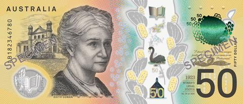

1 cent coin
From 1966 until 1984, the obverse of the Australian one-cent coin featured the elegant portrait of Queen Elizabeth II, designed by the renowned artist Arnold Machin. In 1985, this portrait was updated to a version by the acclaimed sculptor Raphael Maklouf, which remained in place until the coin's withdrawal from circulation in 1992. The reverse side of the coin is adorned with the intricate image of a feathertail glider (Acrobates pygmaeus), a charming gliding possum unique to the Australian states bordering the Pacific Ocean. This exquisite design was crafted by Stuart Devlin, the talented artist behind the reverses of all the original Australian decimal coins.2 cent coin
The Australian two-cent coin was introduced in 1966 and was the coin of the second-lowest denomination until it was withdrawn from circulation in 1992 (along with the one-cent piece). It is still counted as legal tender, but is subject to some restrictions, and two-cent coins are legal tender only up to the sum of 20 cents. A two-cent coin in 1966 would have a purchasing power equal to about 30c in 2022 values.5 cent coin
The Australian five-cent coin is the lowest-denomination circulating coin of the decimal Australian dollar introduced on 14 February 1966, replacing the pre-decimal sixpence. It has been the lowest-denomination coin in general circulation since the withdrawal of the one-cent and two-cent coins in 1992. Due to inflation, the purchasing power of the five-cent coin continues to drop, and as of 2018 represents 0.27% of the country's minimum hourly wage for workers age 21 or over.
10 cent coin
The Australian ten-cent coin is a coin of the decimal Australian dollar. When the dollar was introduced as half of an Australian pound on 14 February 1966, the coin inherited the specifications of the pre-decimal shilling; both coins were worth one twentieth of a pound and were called "bob". On introduction it was the fourth-lowest denomination coin. Since the withdrawal from circulation of the one and two cent coins in 1992, it has been the second-lowest denomination coin in circulation.20 cent coin
The twenty-cent coin of the Australian decimal currency system was issued with conversion to decimal currency on 14 February 1966, replacing the florin which was worth two shillings, a tenth of a pound.
50 cent coin
The twelve-sided Australian fifty-cent coin is the third-highest denomination coin of the Australian dollar and the largest in terms of size in circulation. It is equal in size and shape to the Cook Island $5 coin, and both remain the only 12-sided coins in the southern hemisphere. It was introduced in 1969[5] to replace the round fifty-cent coin issued in 1966.
1 dollar coin
The Australian one-dollar coin is the second most valuable circulation denomination coin of the Australian dollar after the two-dollar coin; there are also non-circulating legal-tender coins of higher denominations (five-, ten-, and two-hundred-dollar coins).2 dollar coin
The Australian two-dollar coin is the highest-denomination circulating coin of the Australian dollar. It was first issued on 20 June 1988, having been in planning since the mid-1970s. It replaced the Australian two-dollar note due to having a longer circulatory life. The only "mint set only" year was 1991.
1 dollar note
The Australian one-dollar note was introduced in 1966 due to decimalisation, to replace the 10-shilling note. The note was issued from its introduction in 1966 until its replacement by the one-dollar coin in 1984. Approximately 1.7 billion one-dollar notes were printed.
2 dollar note
The Australian two-dollar note was introduced in 1966 due to decimalisation, to replace the £1 note which had similar green colouration. The note was issued from its introduction in 1966 until its replacement by the two-dollar coin in 1988.5 dollar note
The Australian five-dollar note was first issued on 29 May 1967 with a unique mauve color, filling a gap from the pre-decimal system. On 7 July 1992, the first polymer version was introduced to enhance durability and security. A major design update on 1 September 2016 featured Queen Elizabeth II10 dollar note
The Australian ten-dollar note was one of the four original decimal banknotes (excluding the Australian five-dollar note) that were issued when the currency was changed from the Australian pound to the Australian dollar on 14 February 1966. It replaced the Australian five-pound note, which included the same blue colouration. There have been four different issues of this denomination: a paper banknote; a commemorative hi-polymer note, to celebrate the bicentennial of Australian settlement (the first polymer banknote of its kind); the 1993–2017 polymer note; and from September 2017 a polymer note featuring a transparent window.20 dollar note
The Australian twenty-dollar note was issued when the currency was changed from the Australian pound to the Australian dollar on 14 February 1966. It replaced the £10 note which had similar orange colouration. There have been only three different issues of this denomination: a paper note which had a gradient of yellow and red, with a distinct orange background, and two designs of polymer note which can be recognised for their distinct red-orange colouration, and so it was nicknamed a "lobster". The first polymer note was issued on 31 October 1994 and the Next Generation polymer banknote was issued on 9 October 2019.
